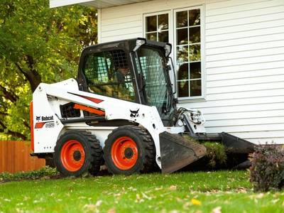

Rentals

Bobcat Machinery
We will change the way the world works for you when we rent this loader. And we never stop innovating. Completely redesigned, inside and out, R-Series loaders are the most powerful, durable loaders ever made. Built to tackle your everyday work and your toughest challenges, R-Series is the revolution your work demands. We have the best of the best prices also.
- 1. Bucket
- 2. Cement Mixer
- 3. Bush Whacker
- 4. Post-hole Drill
- 5. Trencher
Attachments
Excavators
it’s easy to find a machine that matches your working conditions, jobsite requirements and project tasks. Choose an excavator with the right combination of dig depth, arm configuration and tail swing style for your work. Add specialized attachments that do more than dig, and maximize the kinds of projects you can take on. And for get for a all time you can you rent
- 1. Buckets
- 2. Compacters
- 3. Grapples
- 4. Rakes
- 5. Thumbs
Attachments
Tractors
Our equipment has remained a constant presence on farms and ranches. With our new line of sub-compact and compact tractors ranging from 21 to 58 hp, Bobcat is coming back to our roots in a big way. These powerful, easy-to-use compact tractors deliver the legendary quality our construction and landscaping equipment is known for, but built for ranch, farm and property owners like you who want to put this hard-working brand to work on your slice of heaven.
- 1. Aerators
- 2. Chippers
- 3. Post hole digger
- 4. Tillers
- 5. Log splitters
Attachments
Telehanders
Projects that require increased lift height, reach and capacity, design and build a huge selection of standard and hydraulic-powered attachments which can be changed out using the Bob-Tach® or power quick-tach mounting systems for greater versatility and efficiency. It will quickly become your favorite machine for farming applications, rental, construction sites, landscaping companies and snow removers.
- 1. Forks
- 2. Outriggers
- 3. Chasis
- 4. Fork Carriage
- 5. Bones
Attachments

Electrical Tools
Some people don't know what electrical tools are. Electrical tools are tools used to work on an electrical system. These can include a wide range of tools such as wire and cable cutters, wire strippers, coaxial compression tools, telephony tools, wire cutter/strippers, cable tie tools, accessories and even more. If tools listed aren't what you need give us a call and we probably have it.
- 1. Rotor-Hammer
- 2. Circular Saw
- 3. Reciprocating Saw
- 4. Auger Drill
- 5. Nail Guns
Tools
Maintenance
The technical meaning of maintenance involves functional checks, servicing, repairing or replacing of necessary devices, equipment, machinery, building infrastructure, and supporting utilities in industrial, business, governmental, and residential installations. So if you're ever in need of some home mainenance give us a call and we will be always be avaliable. Our work whenever and wherever.
- 1. Pressure Washer
- 2. Paint Sprayer
- 3. Air Compressor
- 4. Sump Pump
- 5. Laser Transit Level